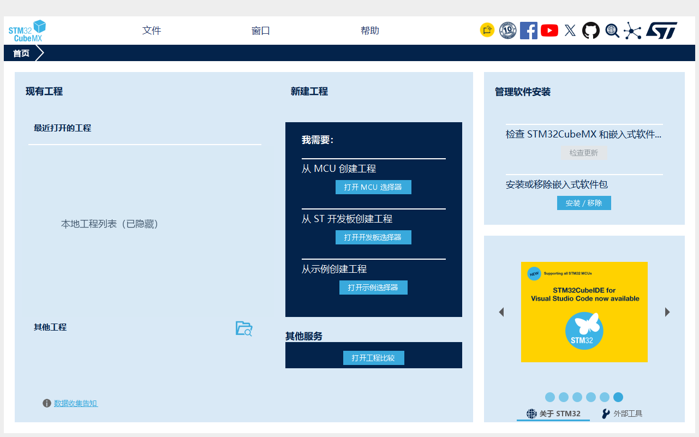

常用页面，中文可读
覆盖菜单、首页、工程管理、代码生成选项，以及引脚、时钟和部分外设选项。
未收录文字仍显示英文菜单、配置页、常用选项，换成熟悉的中文。
继续使用原版 CubeMX，保留你需要的芯片支持。
显示示意 · 实际程序效果见下方截图
熟悉的工具，更顺手一点
沿用原版 CubeMX 的能力，让日常操作更容易理解。
覆盖菜单、首页、工程管理、代码生成选项，以及引脚、时钟和部分外设选项。
未收录文字仍显示英文通过独立启动器打开 CubeMX。无需替换原版 EXE、插件和数据库，也保留原版英文启动方式。
使用你已安装的传统版 CubeMX词库使用 UTF-8 文本格式。点击“编辑中文词库”即可修改译文，保存并重启中文版后生效。
英文原文 + Tab + 中文译文所见即实际效果
真实 CubeMX 首页截图，已隐藏本地工程列表。

下载 Windows 便携 ZIP，解压整个文件夹。保留 EXE、两个 JAR 和 translations 文件夹。
保存并关闭已打开的 CubeMX。运行 CubeMX-CN.exe，确认自动找到的安装目录，或手动选择。
想切回英文？关闭 CubeMX，再选择「启动英文版」，也可以使用原版快捷方式。
准备好，就从这里开始
下载便携包，保留熟悉的工作流。
不支持 CubeMX2。首版已验证首页及代表性控件；全部外设页面、工程保存和代码生成的完整回归尚未完成。
ZIP · 10.84 MiB · 无需另装 Python
从 Gitee 下载GitHub 备用下载Gitee 如提示登录，可登录后下载或使用备用入口。
ee6134b320b3a738cd2ded95b527425429ac7b406778ac977c85423a3a9d3493再了解一点
这是传统版 STM32CubeMX 的中文启动器，需要你先安装原版。芯片支持、配置和代码生成仍由原版 CubeMX 提供。它与 STMicroelectronics 没有隶属或背书关系。
汉化工具不覆盖原版 EXE、插件、数据库、.ioc 或启动配置，只为本次启动加载显示翻译。CubeMX 自身仍会正常更新用户设置、软件包索引，并在你保存时写入工程。
当前面向 Windows x64、使用 Java 21 的传统版 CubeMX，不支持 CubeMX2。芯片范围沿用你安装的原版。已记录验证环境为 Java 21.0.10 / CubeMX 内部组件 6.18.1-RC2；其他版本未逐一验证。查看验证范围 ↗
当前词库有 1,122 条。动态文字、自定义绘制、系统窗口、图片和线上内容可能不在覆盖范围。编辑框和文件选择器保留原文，搜索、复制和无障碍接口也可能返回英文。
在启动器中点击“编辑中文词库”，修改英文与中文之间用 Tab 分隔的 UTF-8 词条，保存后重启中文版。停止使用时关闭 CubeMX，改用原版快捷方式即可；汉化文件夹可以删除。
先检查是否完整解压、是否为传统版 CubeMX 及 Java 21。如果系统临时目录也含中文，请将汉化包与词库放到纯英文目录。通过启动器查看日志；反馈前请隐藏本地路径、工程名称等私人信息。提交问题 ↗